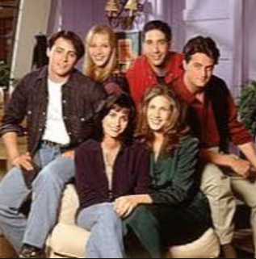

Cerebral Cinema is a multimodal Transformer framework that predicts cortical brain activity from synchronized movie transcripts and video representations using TinyLlama, VideoMAE and fMRI recordings.

Participants
TV Seasons
Brain Parcels
Multimodal Features
The complete workflow of Cerebral Cinema from multimodal movie stimuli to whole-brain fMRI prediction.
The design and structure of this website were inspired by an existing research project website. Full credit goes to the original authors for their excellent presentation style. This website has been adapted solely for presenting the Cerebral Cinema project.
📄 View Original Paper